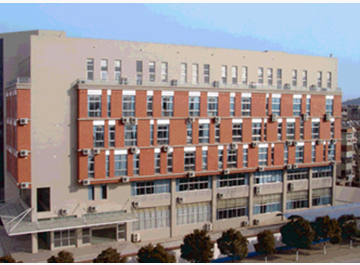
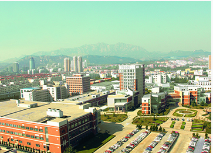
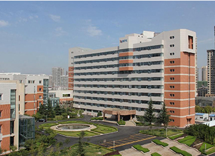
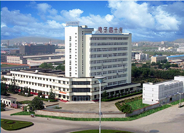
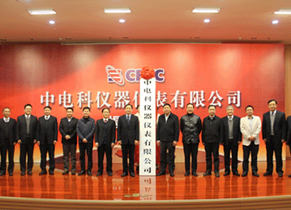

电话：800-8687-041
中文
| 登录 | 注册
发展历程
COMPANY HISTORY
自1968年成立以来，中电仪器以振兴中国电子仪器事业为己任，克服重重困难，自强不息，艰苦创业，走出了一条自力自强、开拓进取的振兴中国电子仪器之路，谱写出一曲曲追求卓越、勇攀高峰的壮丽凯歌。
-
1968年成立于陕西凤县1968年3月，在陕西凤县温江寺公社谷家庄南家关兴建第1406研究所(超高频电子器件测试设备研究所)，主要任务是负责研制测试超高频电真空和微波半导体器件所需的测试设备、仪器、微波元件等。四十一所诞生了。在三线艰苦条件下，四十一所的开拓者们经历了十年的艰苦奋斗，先后完成了十多项课题的研究，部分课题获得了全国科学大会奖和电子工业部科技进步奖.
-

1982年整体搬迁于安徽蚌埠通闭塞和自然灾害的侵袭，地处秦岭腹地的四十一所面临着重重困难，科研生产停顿，职工生活没有保障。1982年3月，经第四机械工业部批准，四十一所开始成建制分期分批迁入安徽省蚌埠市。经过近十年的努力，四十一所的创业者们克服了资金短缺、场地狭窄的种种困难，边搬迁、边建设、边科研、边生产，终于在淮河岸边建成我国唯一的电子测量仪器研究所—华东电子测量仪器研究所。
-

1997年部分研究室搬至青岛为了满足现代化建设的需要，经批准，1991年，41所开始在山东青岛经技术开发区建设青岛分部，实施微波/毫米波测试专业的重心转移。又是一个从无到有，从小到大的创业历程，一座高科技的电子测试仪器研发基地在黄海之滨建成。
-

2010年军工科研转移至青岛为了加强军工科研力量，吸引高水平技术研发人才，2010年 41所将军工科研全部转移至青岛，设立八个研发部分别从事微波/毫米波测量、光通信测量、数字通信测量、无线电通信测量、自动测试系统集成、有源和无源微波部件等八个方向的产品研发工作。
-

2013年40、41所一体化运营2013年，中国电子科技集团公司为加快仪器产业和相关元器件产业发展，加快集团公司内部资源整合，加强优势互补，战略协同，提高在市场的竞争力和核心技术能力，决定将41所和40所一体化运营。
-

2015年中电科仪器仪表公司成立2015年5月，中电科技仪器仪表公司在青岛成立。中电仪器将作为新的起点，紧紧抓住大好发展机遇，励精图治，再创辉煌。以仪器产业化为奋斗目标，条件建设日新月异、智力结构不断升级、科研成果推陈出新、产业结构规模空前。先后完成了电子测试技术重点实验室、仪器工程中心等一批技改项目，中电仪器将踏上新的征程。

800-8687-041
中电仪器技术论坛
其他链接：


-
关于中电仪器
新闻中心
公司简介
工作机会 -
采购指南
如何购买
索取报价
查看特价优惠
代理合作 -
技术支持
查找手册
更新固化软件/软件
访问论坛
联系我们 -
计量和服务
计量校准
仪器维修
培训与教育 -
公司链接
中国电科第41所
中国电科第40所
依爱消防
依爱通信
兴仪电子

中电科仪器仪表有限公司
青岛： 地址：山东省青岛市黄岛区香江路98号
邮箱 : eiqd@ei41.com
蚌埠: 地址：安徽省蚌埠市华光大道726号
邮箱：eibb@ei41.com
www.cetcei.com中电科仪器仪表有限公司 《中华人民共和国电信与信息服务业务经营许可证》编号： 皖ICP备05003230法律说明 | 网站地图
-

在线交流 -

联系电话 -

关注微信 -